Chapter 31 Linear and Logistic Regressions
Appendix 31.A Population ordinary least squares
Assume that
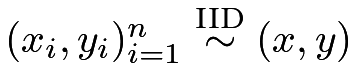
, where is a
is a  -dimensional random scalar or vector and
-dimensional random scalar or vector and  is a random scalar.
Below I will use
is a random scalar.
Below I will use 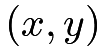
to denote a general observation, dropping the subscript for simplicity.
Define the population ordinary least squares (OLS) coefficient as
for simplicity.
Define the population ordinary least squares (OLS) coefficient as
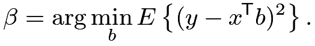 |
The objective function is quadratic in  , so we can show that the minimizer is
, so we can show that the minimizer is
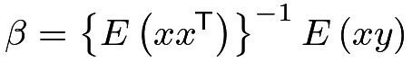 |
if the moments exist and
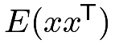
is invertible.With  , we can define
, we can define
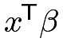
as the linear projection of on , and define
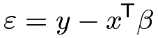 |
(158) |
as the population residual.
By the definition of , we can verify that
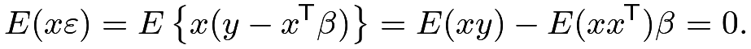 |
Example 31.1 (population OLS with the intercept)
If we include  as a component of , then
as a component of , then
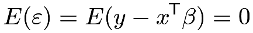 |
which further implies that 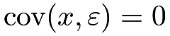, the mean of the population residual
must be zero, and it is uncorrelated with other covariates by construction.
Example 31.2 (univariate population OLS with the intercept)
An important special case is that for scalars and , we can define
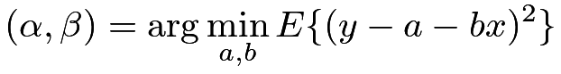 |
which have explicit formulas
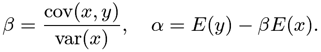 |
Example 31.3 (univariate population OLS without an intercept)
Without intercept, we can define
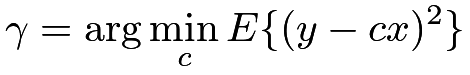 |
which equals
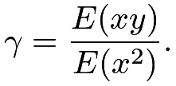 |
When has mean zero,  equals the in Example 31.2.
equals the in Example 31.2.
Appendix 31.B Sample ordinary least squares
Based on data , we can easily obtain the moment estimator for the population OLS coefficient
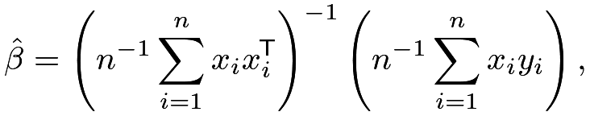 |
and the residuals
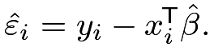
This is called the sample OLS or simply the OLS. The OLS coefficient minimizes the residual sum of squares
minimizes the residual sum of squares
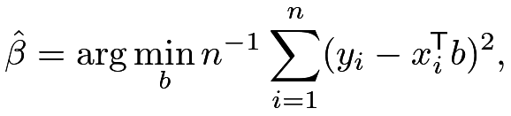 |
so it must satisfy
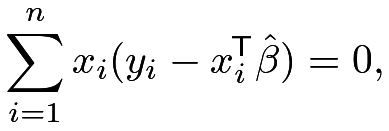 |
which is sometimes called the Normal equation.
The fitted values, also called the linear projections of  on
on
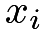
, equal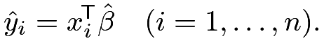 |
Using the matrix notation
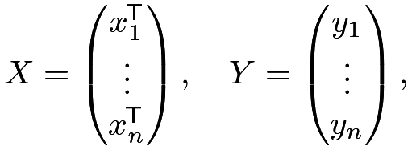 |
we can write the OLS coefficient as
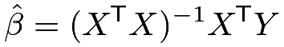 |
and the fitted vector as
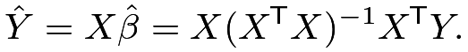 |
Define the hat matrix as
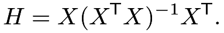 |
Then we also have
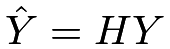
, justifying the name “hat matrix.” The diagonal elements of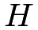
,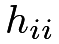
’s, are often called the leverage scores.Assuming finite fourth moments of , we can use the law of large numbers and the CLT to show that
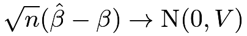 |
in distribution with
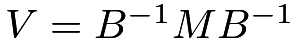
, where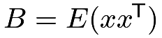
and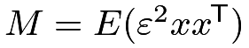
. So a moment estimator for the asymptotic variance of is
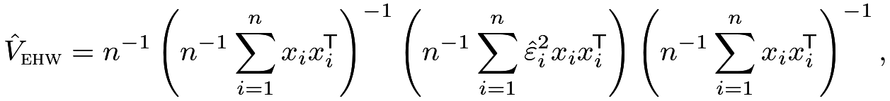 |
(160) |
which is called the Eicker–Huber–White (EHW) robust covariance estimator (Eicker,, 1967; Huber,, 1967; White,, 1980). We can show that
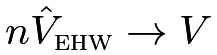
in probability. Based on and  , we can make inference about the population OLS coefficient .
, we can make inference about the population OLS coefficient .
There are many variants of the EHW robust covariance estimator based on the leverage scores (Long and Ervin,, 2000). In particular, the HC1 variant modifies
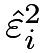
to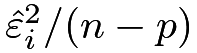
, the HC2 variant modifies to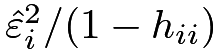
, and the HC3 variant modifies to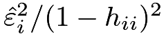
, in the definition of.
Appendix 31.C Frisch–Waugh–Lovell Theorem
The Frisch–Waugh–Lovell (FWL) theorem has two versions: one at the population level and the other at the sample level. It reduces multivariate OLS to univariate OLS and therefore facilitates the understanding and calculation of the OLS coefficients. Below I will present special cases of the FWL theorem which are enough for this book.
Theorem 31.1 (population FWL)
The coefficient of 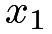 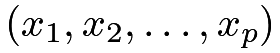 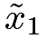 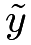 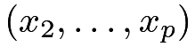 on or on
In Theorem 31.1, residualizing is crucial but residualizing is not.
Theorem 31.2 (sample FWL)
With data 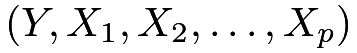 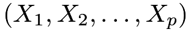 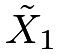 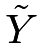 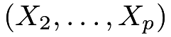 in the OLS fit of
in the OLS fit of  on or on on .
on or on on .
Again, in Theorem 31.2, residualizing is crucial but residualizing is not.
Ding, (2021) gives more numerical properties related to the sample FWL theorem.
Appendix 31.D Linear model
Sometimes, we impose a stronger model assumption which requires the conditional mean of given is linear:
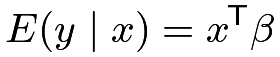 |
or, equivalently,
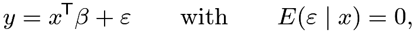 |
which is called the restricted mean model. Under this model, the population OLS coefficient is the true parameter of interest:
Moreover, the population OLS coefficient does not depend on the distribution
of . The asymptotic inference in Section 31.A applies to this model too.
In the special case with , the asymptotic variance of the OLS coefficient reduces to
so a simpler moment estimator for the asymptotic variance of is
| (161) |
where is an unbiased estimator for  , recalling that
, recalling that  denotes the sample size and denotes the dimension of . This is the standard covariance estimator from the lm function.
denotes the sample size and denotes the dimension of . This is the standard covariance estimator from the lm function.
Based on the BostonHousing data, we first obtain the standard output from the lm function.
In R, the lm function can compute , and the hccm function in the package car can compute as well as its variants. Below we compare the  -statistics based on different choices of the standard errors. In this example, the EHW standard errors differ a lot for some regression coefficients.
-statistics based on different choices of the standard errors. In this example, the EHW standard errors differ a lot for some regression coefficients.
Appendix 31.E Weighted least squares
Assuming that with . At the population level, we can define the weighted least squares (WLS) coefficient as
which satisfies
and thus equals
if is invertible.
At the sample level, we can define the WLS coefficient as
which satisfies
and thus equals
if is invertible.
In R, we can specify weights in the lm function to implement WLS.
Appendix 31.F Logistic regression
31.F.1 Model
Technically, we can apply the OLS procedure even if the outcome is binary. However, it is a little awkward to have predicted probabilities outside the range of ![[0,1]](m/62f719e60b27.png) . This motivates us to consider the
following model:
. This motivates us to consider the
following model:
where is a monotone function,
and its inverse is often called the link function. The  function can be any distribution function of a random variable, but we will focus on the logistic form:
function can be any distribution function of a random variable, but we will focus on the logistic form:
We can also write the logistic model as
or, equivalently, with the definition , we have
Assume that  is binary.
Under the logistic model, we have
is binary.
Under the logistic model, we have
 |
 |
|||
|
where contains all other regressor .
Therefore, the coefficient  equals the log of the odds ratio of on conditional on other regressors.
equals the log of the odds ratio of on conditional on other regressors.
31.F.2 Maximum likelihood estimate
Let .
To estimate the parameter , we can maximize the following likelihood function:
 |
|||
Let denote the maximizer, which is called the maximum likelihood estimate (MLE). Taking the log of and differentiating it with respect to , we can show that the MLE must satisfy the first-order condition:
If contains the intercept, the MLE must satisfy
that is, the average of the observed ’s must be identical to the average of the fitted probabilities ’s.
Using the general theory for the MLE, we can show that it is consistent for the true parameter and is asymptotically Normal:
in distribution, where
So we can approximate the covariance matrix of by
In R, the glm function can find the MLE and report the estimated covariance matrix. We use the lalonde data to illustrate the logistic regression with the binary outcome indicating positive real earnings in 1978.
31.F.3 Extension to the case-control study
In case-control studies, sampling is conditional on the binary outcome, that is, units with outcomes and are sampled with different probabilities. Let be the sampling indicator. In case-control studies, we have
as a function of , and we only observe units with .
Based on the model and the sampling mechanism of the case-control study, it does not seem obvious whether or not we can still use logistic regression to estimate the coefficients. Nevertheless, Prentice and Pyke, (1979) proved a positive results. In case-control studies, logistic regression can still consistently estimate all the coefficients except for the intercept.
31.F.4 Logistic regression with weights
Sometimes, unit has weight  . Then we can fit a weighted logistic regression by solving
. Then we can fit a weighted logistic regression by solving
In R, we can specify weights in the glm function to implement weighted logistic regression.
Appendix 31.G Homework problems
AE.1 Sample WLS with the intercept
Assume the regressor contains the intercept. Show that
| (162) |
where and are the weighted averages of the ’s and ’s.
AE.2 Population OLS with a binary regressor
Assume is binary. Define the population OLS:
Show that and .
AE.3 Univariate WLS
As a special case of WLS, define
where . Show that
| (163) |
and
| (164) |
where and are the weighted averages of the ’s and ’s.
Further assume that the ’s are binary. Show that
| (165) |
That is, if the regressor is binary in the univariate WLS, the coefficient of the regressor equals the difference in the weighted means.
Remark: To prove (165), use an appropriate reparametrization of the WLS problem. Otherwise, the derivation can be tedious.
AE.4 OLS with orthogonal regressors
Consider sample OLS fit of an -vector on an matrix  , with coefficient . Partition into
, with coefficient . Partition into  , where is an matrix and
, where is an matrix and  is an matrix, with . Correspondingly, partition into
is an matrix, with . Correspondingly, partition into
Assume and are orthogonal, that is, . Show that  equals the coefficient from OLS of on and equals the coefficient from OLS of on , respectively.
equals the coefficient from OLS of on and equals the coefficient from OLS of on , respectively.
AE.5 OLS with a non-degenerate transformation of the regressors
Define as the coefficient from the sample OLS fit of an -vector on an matrix .
Let  be a non-degenerate matrix, and define .
Define as the coefficient from the sample OLS fit of on .
be a non-degenerate matrix, and define .
Define as the coefficient from the sample OLS fit of on .
Show that
AE.6 Variances of the OLS estimator
Assume and
Show that the OLS estimator has conditional mean
and conditional variance